- Sec03-01サイバーセキュリティ関連プレゼン資料シナリオ
- 【2018年6月28日】
- 【基本理念】Society5.0時代に必要なセキュリティ対策
- 【参考】経済産業省商務情報政策局サイバーセキュリティ課資料
- １．はじめに~サイバーセキュリティを巡る状況の変化
- １．１．Society5.0、ConnectedIndustriesが実現する社会
- 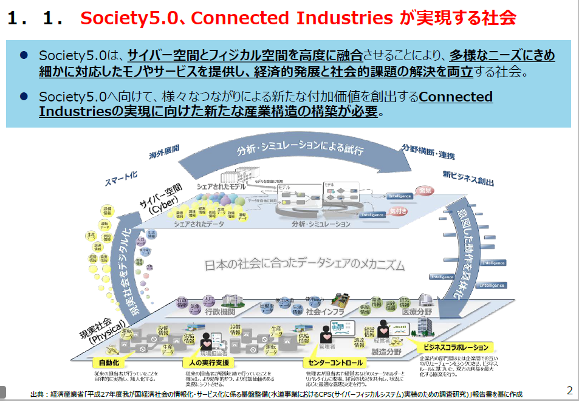
- １．２．サイバー攻撃の脅威の増大
- 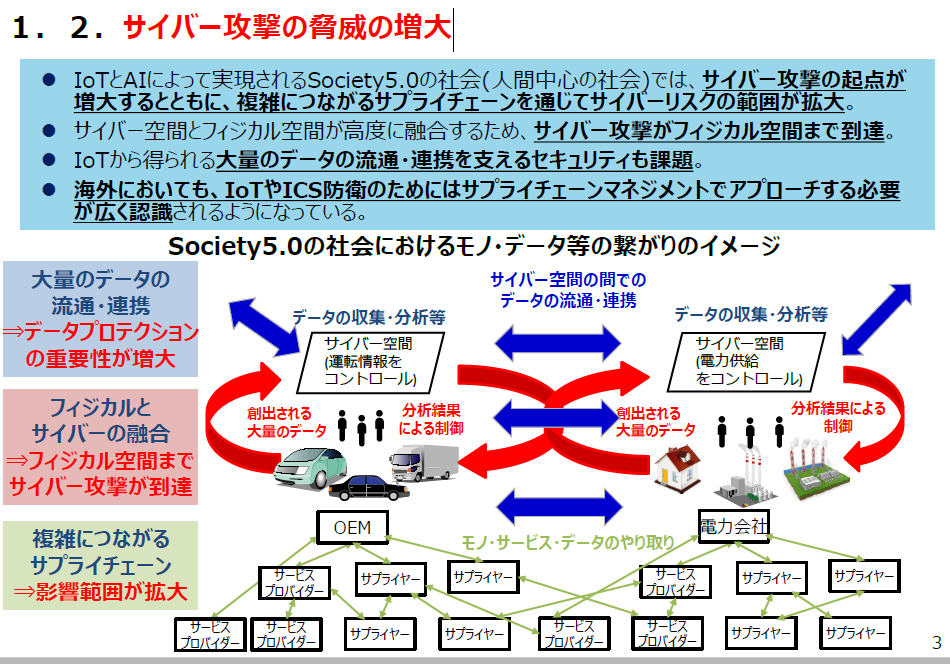
- ２．サイバー・フィジカル・セキュリティ対策フレームワークの考え方
- ２．１．フレームワークを策定する目的
- 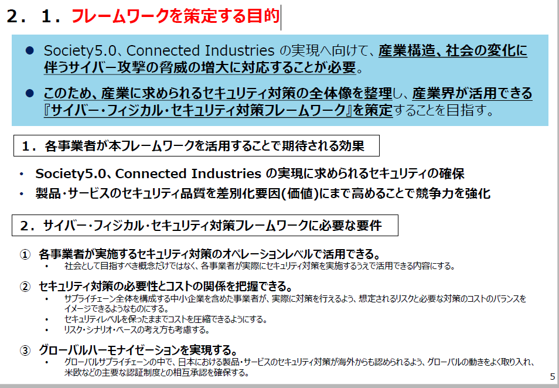
- ２．２．フレームワークの構造～Society5.0型サプライチェーン“価値創造過程”への対応

- (１)価値創造過程が展開する産業社会の三層構造
- 三層構造アプローチの意義
- (２)価値創造過程に関わる６つの要素
- ３．Society5.0において必要なセキュリティ対策
- ３．１．各層において守るべき事項・リスク・対策の概要
- ３．２．各層におけるセキュリティ対策
- (１)企業間のつながり（従来型サプライチェーン）に係るセキュリティ対策(1/2)【第1層】
- (２)フィジカル空間とサイバー空間のつながりに係るセキュリティ対策(1/3)【第２層】

- 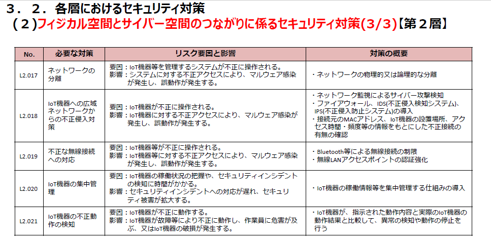
- (３)サイバー空間におけるつながりに係るセキュリティ対策(1/3)【第３層】
- ４．信頼の確保に向けて
- ４．１．フレームワークにおける信頼の確保の考え方

- (１)信頼の創出、信頼の証明、信頼のチェーンの構築と維持の関係のイメージ
- 【戦略】一般的なシステムの構築・運営とセキュリティ対策（一般論）
- Webサイト・ECサイトの構築、運営におけるセキュリティ考慮点
- 概要
- サービスの高度化のために、システム構築・運用に当たっては、次世代技術を活用することが望ましい
- AIと人間の能力と役割の一般論として、AIが実用段階に達した今、今まで人が担ってきた部分の作業も、精密化するとAIを活用したほうが効率的なことが多々ある。
- システム構築・運用に当たっては、必要なスキル・知識を持った人材の確保が必要である
- アーカイブ機関において、システムの調達・構築・運用のスキル・知識を持った人材が不足しているのが現状
- 構築のタスクに必要なスキル・知識を選択的に習得することが効果的である
- 参考例の１つとして「iコンピテンシ・ディクショナリ」
- 適正な調達を行うために、開発タスクとドキュメントをひな形に進めることが効果的である。
- 参考例の１つとして「政府機関での調達の標準ガイドライン」
- その前提となっているシステム開発標準が「共通フレームワーク」
- Bib40-06-1 次世代システムの標準的な構築プロセス
- システム開発標準としての「共通フレーム2013」
- 共通フレームとは
- ソフトウェアの構想から開発、運用、保守、廃棄に至るまでのライフサイクルを通じて必要な作業項目、役割等を包括的に規定した共通の枠組み。
- 何を実施するべきかが記述されている、「ＩＴシステム開発の作業規定」である。
- 目的は、ソフトウェア開発に関係する人々（利害関係者）が、「同じ言葉で話す」ことが出来るようにするため。
- ウォーターフォール、スパイラル、プロトタイプ、アジャイル系すべての開発方法論に共通したもの。
- 共通フレームの特徴
- （１）超上流の重視
- （２）モジュール性の採用
- （３）責任の明確化
- （４）責任範囲の明確化
- （５）工程、時間からの独立性
- （６）開発モデル、技法、ツールからの独立性
- （７）ソフトウェアを中心としたシステム関連作業までを包含
- （８）システムライフサイクルプロセスとの整合性
- （９）文書の種類、書式を規定しない
- （１０）修整（テーラリング）の採用
- 共通フレームのプロセス体系
- 「要件」の4階層
- 共通フレームに含まれている主な考え方
- （１）「利害関係者の役割と責任分担の明確化」を提唱
- 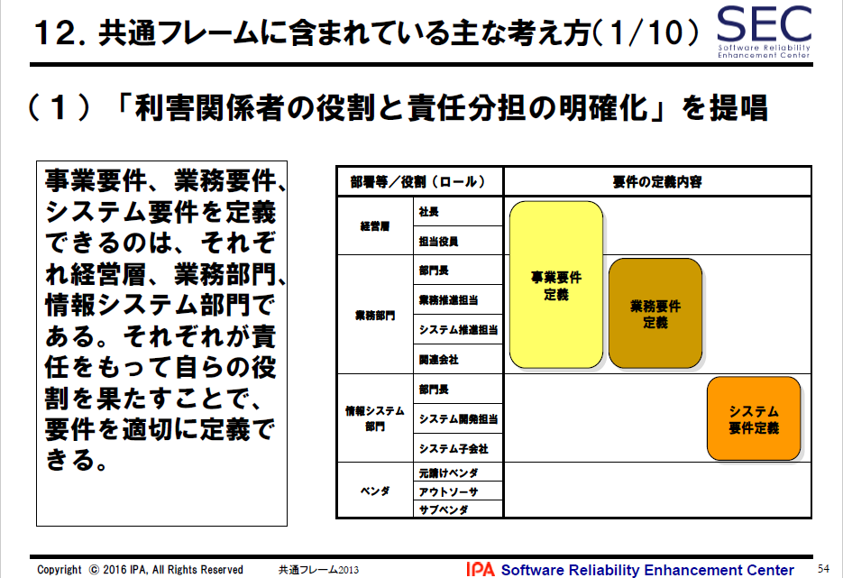
- 事業要件、業務要件、システム要件を定義できるのは、それぞれ経営層、業務部門、情報システム部門である。
- それぞれが責任をもって自らの役割を果たすことで、要件を適切に定義できる。
- （２）「多段階の見積り方式」を提唱

- わずかな情報で見積ること自体、リスクが高い。それ故、それだけで、プロジェクトの目標としてはならない。
- （３）「Ｖ字モデルの採用」を提唱

- 設計（品質の埋め込みプロセス）とテスト（品質の検証プロセス）とを対応させることにより、プロダクト品質を確保する。
- （４） 「超上流における準委任契約の採用」を提唱
- 超上流は、基本的には、ユーザ責任であるため、ベンダにとって準委任契約とするのが合理的である。（もし請負契約にすると、ユーザの事情に大きく影響されるため、リスクが大きい）。
- 【例】
- ・超上流→ 準委任ならば運用テスト→ 準委任に
- ・ソフトウェア開発→ 請負
- （５） 「要件の合意及び変更ルールの事前確立」を提唱

- ソフトウェア開発においては、時の経過に伴って「要件は変わるもの」であり、ユーザとベンダとが事前にルールを策定し合意（確定）しておかないと、いざトラブルが発生した時に、速やかな対応が取れない。
- （６）「非機能要件の重要性を認識すること」を提唱

- ●機能要件とは
- システムに実装する機能に関する要件のこと。
- ●非機能要件とは
- 運用要件、移行要件、性能要件、セキュリティ、機密情報保護対策など、機能要件以外の要件のこと。
- 運用テストの段階に至って、問題をもたらす要因は、機能要件のみならず、むしろ深刻な事態になりがちな非機能要件の方であるため、早い段階で「非機能要件の重要性」を認識し、何かしらの対応策を講じることが望ましい。
- （７） 「運用・保守を含めたSLCPを考えること」を提唱
- システムは生きもの。作って終わりではない。顧客との取引が継続する限り、または事業や業務が続く限り（ITシステムを必要とする限り）、システムライフサイクル全般に目配せしてシステム化計画（企画）や要件定義を行うことが、結局は、適正コストで「使えるシステム」を実現できる。
- （８）V&Vの適用場面の解説
- 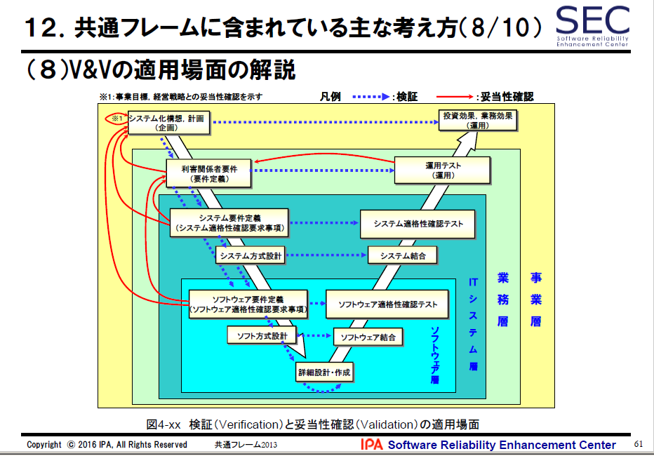
- （９）ソフトウェア保守規格の関連情報を紹介
- （10）「４つの保守タイプ」を紹介
- 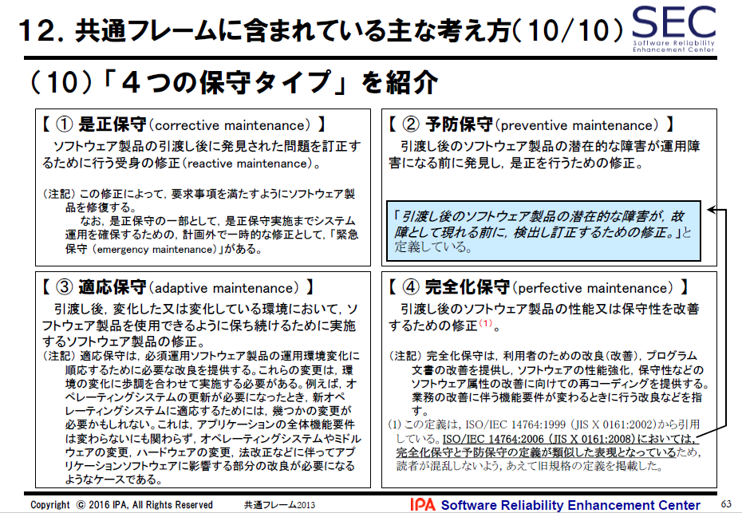
- 【①是正保守（corrective maintenance）】
- ソフトウェア製品の引渡し後に発見された問題を訂正するために行う受身の修正（reactive maintenance）。
- （注記）この修正によって，要求事項を満たすようにソフトウェア製品を修復する。なお，是正保守の一部として，是正保守実施までシステム運用を確保するための，計画外で一時的な修正として，「緊急保守（emergency maintenance）」がある。
- 【②予防保守（preventive maintenance）】
- 引渡し後のソフトウェア製品の潜在的な障害が運用障害になる前に発見し，是正を行うための修正。
- 「引渡し後のソフトウェア製品の潜在的な障害が，故障として現れる前に，検出し訂正するための修正。」と定義している。
- 【③適応保守（adaptive maintenance）】
- 引渡し後，変化した又は変化している環境において，ソフトウェア製品を使用できるように保ち続けるために実施するソフトウェア製品の修正。
- （注記）適応保守は，必須運用ソフトウェア製品の運用環境変化に順応するために必要な改良を提供する。これらの変更は，環境の変化に歩調を合わせて実施する必要がある。例えば，オペレーティングシステムの更新が必要になったとき，新オペレーティングシステムに適応するためには，幾つかの変更が必要かもしれない。これは，アプリケーションの全体機能要件は変わらないにも関わらず，オペレーティングシステムやミドルウェアの変更，ハードウェアの変更，法改正などに伴ってアプリケーションソフトウェアに影響する部分の改良が必要になるようなケースである。
- 【④完全化保守（perfective maintenance）】
- 引渡し後のソフトウェア製品の性能又は保守性を改善するための修正(1)。
- (1) この定義は，ISO/IEC 14764:1999 （JIS X 0161:2002）から引用している。ISO/IEC 14764:2006 （JIS X 0161:2008）においては，完全化保守と予防保守の定義が類似した表現となっているため，読者が混乱しないよう，あえて旧規格の定義を掲載した。
- （注記）完全化保守は，利用者のための改良（改善），プログラム文書の改善を提供し，ソフトウェアの性能強化，保守性などのソフトウェア属性の改善に向けての再コーディングを提供する。業務の改善に伴う機能要件が変わるときに行う改良などを指す。
- 実務に活かすIT化の原理原則17ヶ条
- 原理原則１７ヶ条の構成
- 基本的な考え方：
- 原理原則を理解しやすくするため、原理原則の基になる考え方を説明したもの
- 行動規範：
- 原理原則の基づいて、受注者・発注者のそれぞれが具体的にどのように行動すべきか示したもの
- 原理原則条項：
- 原理原則は「超上流」において必要とされる事柄を、格言のように短く表現したもの
- 原理原則【１】 ユーザとベンダの想いは相反する
- 原理原則【２】 取り決めは合意と承認によって成り立つ
- 原理原則【３】 プロジェクトの成否を左右する要件確定の先送りは厳禁である
- 原理原則【４】 ステークホルダ間の合意を得ないまま、次工程に入らない
- 原理原則【５】 多段階の見積りは双方のリスクを低減する
- 原理原則【６】 システム化実現の費用はソフトウェア開発だけではない
- 原理原則【７】 ライフサイクルコストを重視する
- 原理原則【８】 システム化方針・狙いの周知徹底が成功の鍵となる
- 原理原則【９】 要件定義は発注者の責任である
- 原理原則【10】 要件定義書はバイブルであり、事あらばここへ立ち返るもの
- 原理原則【11】 優れた要件定義書とはシステム開発を精緻にあらわしたもの
- 原理原則【12】 表現されない要件はシステムとして実現されない
- 原理原則【13】 数値化されない要件は人によって基準が異なる
- 原理原則【14】 「今と同じ」という要件定義はありえない
- 原理原則【15】 要件定義は「使える」業務システムを定義すること
- 原理原則【16】 機能要求は膨張する。コスト、納期が抑制する
- 原理原則【17】 要件定義は説明責任を伴う
- 原理原則【１】 ユーザとベンダの想いは相反する

- ITシステムの企画・開発の現場では、ユーザ企業とベンダ企業の相反する想いがあります。例えば、ユーザ企業は、要件はできるだけじっくり詰めたいし、予算は早期の投資判断を求められるので最終費用を早く確定してほしいとの想いがあります。他方のベンダ企業の想いはまったくその逆です。これがお互いにとってそもそもの不幸の始まりとなります
- 開発規模（工数）に見合った、最低限の工期を確保できなければ顧客満足を満たす開発はできません。受注者には開発規模に見合った工期を主張することが求められます。
- 原理原則【２】 取り決めは合意と承認によって成り立つ
- 証拠のない口約束のように、決まったと了解していることが、それ以降の都合で無責任に変更となり、残念な思いをする、ということはよくあります。
- 決め事は可能な限り文章に残し、承認ルール（主体と方法）の確認をして、信頼度を高めなければいけません。
- 承認は合意に基づいていることが必要です。
- 原理原則【３】 プロジェクトの成否を左右する要件確定の先送りは厳禁である
- 要件定義は開発全体の成否を左右重要な工程です。曖昧な要件のまま開発が始まると、プロジェクトが失敗するリスクが大きくなります。
- 特に、システムの出来を左右する要件に高いリスクを抱えたまま、プロジェクトを進めることは危険です。あせってベンダに開発を依頼しても、先に進めず、かえって時間・コストがムダになることもあります。
- 解決の目処が立つまでは、先に進まない勇気も必要です。
- 原理原則【４】 ステークホルダ間の合意を得ないまま、次工程に入らない
- プロジェクトを起こした業務企画担当者は、プロジェクト責任者として、これらステークホルダの方針、意見、課題などについて、漏れなく綿密に把捉し、できることとできないことをIT担当者、ベンダとともに切り分け、業務要件として取りまとめていく責任を果たす必要があります。
- ステークホルダもまた、システムの供給側に立つ場合は、積極的にシステム開発要件の策定に参加し、利用者ニーズを確実に把握して、正確にシステム機能に反映していくことが必要です。
- 原理原則【５】 多段階の見積りは双方のリスクを低減する

- 不確定要素が多い中での見積りをプロジェクトの目標値として設定すべきではありません。
- あいまいさがある段階の見積りを、はっきりした段階で見積り直せるルールづくりなどがプロジェクト成功の鍵となります。
- 要件の不確定さやプロジュクトの特性・リスクに応じて、適切な契約方式（多段階契約、インセンティブ付契約など）を選択することにより、発注者・受注者の双方にメリットが生まれます。多段階とは、受注先をその都度変えるということではなく、固まり具合に応じて見積り精度をあげていこうということです
- 原理原則【６】 システム化実現の費用はソフトウェア開発だけではない

- 見積り範囲がソフトウェア開発のことだけを指しているのか、インフラ整備（システム基盤整備）などのような付帯作業も対象にしているかなど、スコープを明確にしていくことが大切です。
- 発注者は、何をお願いし、何を自分で行うのか、一方、受注者は自分の提供する作業やサービスはどの範囲なのかをお互いに明確にしておくことが重要です。
- 原理原則【７】 ライフサイクルコストを重視する
- 開発コスト、運用・保守コストのバランスを考えなければなりません。大切なことはライフサイクルコストを意識することです。
- 例えば、運用性・保守性を高めるポイントとして以下があります。
- －メンテナンスフリー
- －拡張性の容易さ確保
- －モニタリング・トレーサビリティの確保
- －障害発生時の調査、リカバリーが容易な設計
- －OS・ハードウェアのバージョンアップ対応
- 原理原則【８】 システム化方針・狙いの周知徹底が成功の鍵となる
- 超上流のフェーズで、システム化の方針・狙いを浸透させておかないと、各人が勝手気ままに要件を考えるため、仕様の統一に時間がかかり、最初の構築だけでなく、その後の維持・保守においても費用と時間が増大することになります。
- システム化の目的はコンピュータやプログラムではなく、事業目標を達成するための情報システムの構築なのです。
- 原理原則【９】 要件定義は発注者の責任である
- 要件定義とは、どのようなシステム、何ができるシステムを作りたいのかを定義することです。それはあくまでも発注者の仕事であり、発注者の責任で行うものです。要件定義があいまいであったり、検討不足のまま、受注者に開発を依頼した場合、その結果として、コスト増、納期遅れ、品質低下を発生させるおそれがあります。その責任を受注者に負わせることはできません。
- 受注者が支援する場合であっても、要件定義で作成した成果物に対する責任は発注者にあります。
- 原理原則【10】 要件定義書はバイブルであり、事あらばここへ立ち返るもの
- ベンダ企業を含むステークホルダ間の合意のベースとなるのは常に要件定義書です。設計工程以降よりも、むしろ、要件定義の合意形成時点での吟味が重要です。「決定先送り型」の要件定義では、あいまいな海図に基づく航海のようなもので、早晩プロジェクトが破綻します。
- ステークホルダ間の合意は、名目的な合意ではなく、実質的な合意であることが不可欠です。
- 原理原則【11】 優れた要件定義書とはシステム開発を精緻にあらわしたもの
- 要件定義工程では、業務要件を整理・把握し、その実現のためのシステム機能要件をしっかり固めます。あわせて性能、信頼性、セキュリティ、移行・運用方法などの非機能要件、既存システム接続要件、プロジェクト特有の制約条件も洗い出します。また、将来の方針を見込んで稼働環境を定めることが大切です。流行に流されず、ルールを定めることです。
- 原理原則【12】 表現されない要件はシステムとして実現されない
- この原則は、建築における施工主と工事業者の関係にあるように、発注と受注における常識です。しかし、情報システム開発においては往々にしてこの原則が成立しない場合があり、「行間を読め」、「言わなくても常識」、「言った言わない」など表現されない要件が、両者のトラブルの原因になります。
- 原理原則【13】 数値化されない要件は人によって基準が異なる
- 要件定義では、定量化できるものは、極力、数値化します。数えられないものは定義できません。「大きい、小さい、速い」だけでは、人によって「ものさし」が異なります。
- 数値化されていても誤りはあります。例えば、使用する単位が違えば結果は大きく変わります。単位まで含めて確認し、決めなければなりません。
- 原理原則【14】 「今と同じ」という要件定義はありえない
- 「今と同じ」でも要件定義は必要です。
- そもそも同じでよいなら再構築する必要はありません。よくないから再構築するというところから発想したいものです。
- 現行システムの調査をする場合は、システムの機能を洗い上げ、新システムの実像を明確にするだけでは不十分です。現行システムをどう使っているか、という点から調査をしなければなりません。
- 「そもそも今の要件はどうなっているのか」を問い直し、場合によっては具体的な要件にまで導くことも必要です。
- 原理原則【15】 要件定義は「使える」業務システムを定義すること
- 要件定義は、業務にとって「使える」、「役に立つ」、「運用できる」システムを定義することです。
- 発注者は、それまでのやり方にとらわれることなく、むだな業務や非効率な手順を客観的に評価し、新業務をゼロベースで再設計することが大切です。
- 要件定義の場に参加して、議論が横道にそれたり、枝葉末節に陥らないように助言するのは受注者の役割です。また、受注者は、要件として定義したものが、システム化計画で想定したコストや期間と比べて過剰なものや、逆にあまりに多くの費用を要さずとも実現可能な要件は勇気を持って変更を進言しなくてはなりません。
- 原理原則【16】 機能要求は膨張する。コスト、納期が抑制する
- システム開発のコストは実現する機能ではなく、工数に比例しますから、どのくらいの作業が残っているのかをきちんと把握しながら、機能との折り合いをつけて作業を進める必要があります。このバランス感覚をプロジェクトメンバー全員が持っていなければ意味がありません。
- プロジェクトの背景や目的に応じたシステム化の範囲を検討し、「ついでにこの範囲も」という考え方は本来の目的を見失うので絶対に避けましょう。
- 原理原則【17】 要件定義は説明責任を伴う
- システム開発における万全なる準備は、正確な要件という情報の次工程に向けての伝達です。自分が次工程に伝える必要のある情報について、要件確定責任だけでなく説明責任を負う必要があります。
- システム開発の受託側から見た原則は「受託した要件として、書いてあるものは実現させる。書かれていないものは作らない。」ことです。
- もちろん、プロジェクトのスタート地点で、すべてを誤りなく責任をもって確定することはできません。「要件の行間を読め」ということを要求してはいけません。
- 基本的には当たりまえの前提や例外処理であっても漏れなく伝達する必要があります。
- 【参考資料】
-
- システムに求められる要求を確実にシステム要件へ
- ユーザ企業からベンダ企業に要求が正しく伝わっていないと、開発プロジェクトの現場で実装する機能は要求を正しく反映したものにはならない。この問題の解決には、ユーザが要求を抜け・漏れなく定義するために実施すべきことを明確にすることが重要。
- そこで、ユーザ企業とベンダ企業の知見やノウハウをまとめた“勘どころ（コツ）”を示した。
- 本ガイドブックは、主にユーザ企業でITシステムの要件定義を実施する読者を対象に、要件定義において発生する問題と、その解決方法をまとめました。
- システム構築の上流工程強化
- ITシステムに関わるIT技術とユーザ企業の現在
- ソフトウェアエンジニアリングの各領域における取り組み
- 各領域に取り組む背景
- Bib40-06-2 政府情報システムでの標準的な構築プロセス
- 「共通フレーム2013」に準拠した政府標準ガイドラインの活用
- システム開発及び人材育成・確保に関して政府の新しい方法論
- 政府情報システムの整備及び管理 に関する標準ガイドライン
- iコンピテンシ・ディクショナリ
- 標準ガイドラインの概要
- 概要
- 政府情報システムの標準的な整備及び管理について、その手続・手順に関する基本的な方針及び事項並びに政府内の各組織の役割等を定める体系的な政府共通のルールとして、本編及び実務手引きが策定された。
- 【×】【詳細項目】サービスの基本計画から実施までの流れ
- 業務の見直し
- プロジェクト計画書等の確認
- 分析等
- １） 業務分析
- 2) 関係者分析
- 3) 実績分析
- 4) 環境分析
- 5) 関連調査
- 業務の見直し内容の検討
- １） 主要課題の整理
- 2) 具体的な業務の見直し内容
- 3) 期待される効果
- 業務要件の定義
- 業務実施手順
- 管理すべき指標
- 情報システム化の範囲
- 情報セキュリティ
- 要件定義作業
- 要件定義の準備
- １） 要件定義の対象範囲等の特定
- ２） ＲＦＩの実施
- ○ 業務要件を実現するために必要な情報システムの機能（以下「機能要件」という。）の案の実現性、
- ○ 実現方法、
- ○ 情報システムが備えるべき機能要件以外の情報システム要件（以下「非機能要件」という。）、
- ○ それらの要件を実現するために必要な経費の見込み、
- ○ 明らかにすべきと考える要件定義事項又は開発方式（スクラッチ開発、ソフトウェア製品の活用、政府共通プラットフォームを含むクラウドコンピューティングサービスの活用等）、
- ○ 開発手法（ウォータフォール型、反復型等）等、
- ○ 事業者に具体的に求めたい内容
- ３） 事業者へのヒアリング等の実施
- ４） 必要な資料の作成
- 要件定義
- 要件定義書の記載内容
- 業務要件
- 機能要件
- 機能、画面、帳票、情報・データ、外部インタフェース
- 非機能要件
- ユーザビリティ・アクセシビリティ、システム方式、規模、性能、信頼性、拡張性、上位互換、中立性、継続性、情報セキュリティ、稼働環境、テスト、以降、引き継ぎ、教育、運用、保守等
- 要件定義書の調整・作成
- プロジェクト計画書への反映
- 調達の計画
- 履行可能性、ライフサイクルコスト、技術的妥当性等を考慮の上、競争性が確保されコストが低減されるよう合理的な調達単位を検討する
- 基本単位
- ①調査研究又は要件定義作成支援
- ② プロジェクト管理支援
- ③ 設計・開発
- （設計・開発の内容が細分化できる場合であっても、
- 必ずしも調達単位を分割する必要はない。）
- ④ ハードウェアの賃貸借又は買取り
- ⑤ ソフトウェア製品の賃貸借又は買取り
- ⑥ 回線
- ⑦ アプリケーションプログラムの保守
- ⑧ ハードウェアの保守
- ⑨ ソフトウェア製品の保守
- ⑩ 運用
- ⑪ 運用サポート業務
- ⑫ 業務運用支援
- ⑬ 施設の賃貸借
- ⑭ 施設の整備等
- ⑮ システム監査（情報セキュリティ監査を含む。）
- 調達仕様書の記載内容
- ア 調達案件の概要に関する事項
- 調達の背景
- 目的
- 期待する効果
- 業務・情報システムの概要
- 契約期間
- 作業スケジュール等
- イ 調達案件及び関連調達案件の調達単位、調達の方式等に関する事項
- 調達案件の調達単位
- 調達の方式
- 実施時期等
- ウ 作業の実施内容に関する事項
- 作業の内容
- 成果物の範囲
- 納品期日等
- エ 満たすべき要件に関する事項
- 【重要】要件定義書を別紙として添付
- 要件定義書を満たすべき旨を記載する
- オ 作業の実施体制・方法に関する事項
- 作業実施体制、作業要員に求める資格要件、作業の管理に関する要領等について記載する
- カ 作業の実施に当たっての遵守事項
- 機密保持、資料の取扱い、遵守する法令等について記載する
- キ 成果物の取扱いに関する事項
- 知的財産権の帰属、瑕疵担保責任、検収等について記載する
- 知的財産権の帰属については、産業技術力強化法（平成12年法律第44号）に基づき、技術に関する研究開発活動を活性化し、及び事業活動における効率的な成果物の活用の促進に資するため、受注者側に知的財産権が帰属するものであることに留意する
- 国の業務に特化した汎用性のないもの及び継続的な機能改修が見込まれるものについては、原則として次のとおりとする
- ① 発注者側に知的財産権が帰属する旨を例外的に記載する。発注者側が不利にならないことを条件として、受注者側に対し、その利活用を認める旨を記載する
- ② 成果物の機密の確保や改変の自由を担保するため、受注者側により勝手に著作者人格権が行使されないよう、その旨を記載する
- ③ 納品物における瑕疵担保責任の期間、内容及び責任分界点について記載する
- ク 入札参加資格に関する事項（入札参加要件、入札制限）
- ケ 再委託に関する事項
- コ その他の特記事項
- サ 附属文書
- 調達
- 要件定義書（案）、調達仕様書（案）の作成
- RFI
- 調達仕様書確定
- RFP・公告
- 審査
- 入開札
- 契約
- 検収
- 設計・開発実施要領の内容
- ア コミュニケーション管理
- イ 体制管理
- ウ 工程管理
- エ 品質管理
- オ リスク管理
- カ 課題管理
- キ システム構成管理
- ク 変更管理
- ケ 情報セキュリティ対策
- 設計・開発
- 設計・開発実施計画書等の作成
- 設計・開発工程に入る前の要件定義の内容の調整・確定
- 設計
- １） 要件定義の内容との整合性確認
- ２） 関係機関、情報システムの利用者等との調整
- ３） 移行計画書の案の作成
- ４） 中長期運用・保守作業計画の案の作成
- ５） 運用計画及び保守作業計画の案の作成
- ６） 運用体制等
- 開発・テスト
- １） テスト計画書の作成
- ２） 単体テスト
- ３） 結合テスト・総合テスト
- ４） テスト手順・データの再利用対策
- 受入テストの実施
- １） 受入テストのテスト計画書の作成
- ２） 受入テスト
- 情報システムの本番移行
- 引き継ぎ
- 検査・納品管理
- 標準ガイドラインにおけるIT人材の育成・確保の考え方
- 組織内において、人事ローテーションの工夫を検討するなど、中長期的な視点に立って計画的に推進。
- 専門的・技術的な知識・能力だけでなく、業務分析、業務の見直しの企画立案、プロジェクト管理等の能力の取得が重要。
- 業務は、情報システムを活用してデータの作成や活用ができることが不可欠。一般職員のITリテラシの向上にも努めることが重要。
- 【引用資料】
- 政府情報システムの整備及び管理に関する標準ガイドライン
- 政府情報システムの整備及び管理に関する標準ガイドライン（実務手引書）
- 標準ガイドラインに沿った実践の留意点
- 標準ガイドラインにおける要件定義考え方
- 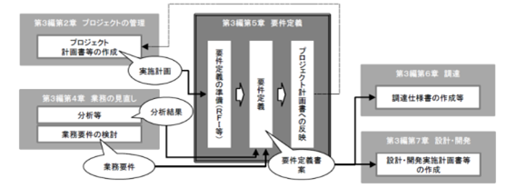
- 要件定義は、情報システムを整備する上で「どのようなシステムを実現するか」の絵姿を描く重要な作業であり、その成果物である要件定義書は後工程の重要なインプットとなる。さらに、見積もりや、特に政府においては調達のための主要なドキュメントの一つとして位置付けられる。
- 標準ガイドラインにおける調達の考え方
- 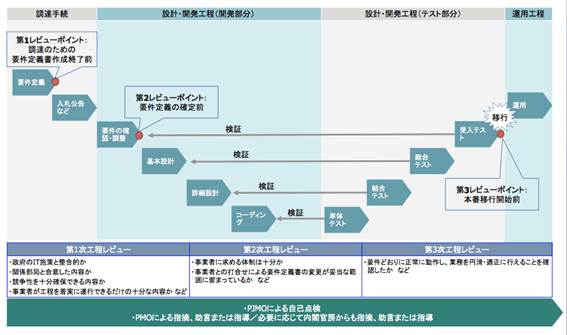
- 調達方式の決定の判断
- 調達方式の決定の判断（例）
- 基本は、一般競争入札（最低価格落札方式）
- 仕様書の解釈により、実施内容にブレがでない詳細な仕様提示が必要【ハードウェア類】
- 予定価格の妥当性の評価は必要だが、業者見積もりの妥当性は評価する能力は求められない
- 一般競争入札（総合評価落札方式）【ソフトウェア類】
- 提案者の創意工夫の余地を残し、提案内容の優劣を技術点で評価する
- 企画競争
- 具体的な実装方式を特定せず、提案者の創意工夫の内容の優劣で評価する
- 業者を選定後は、随意契約として扱われる
- 随意契約
- 業者の言いなりにならないようにすることが肝要
- 実施内容と業者見積もり額の妥当性を精緻に評価する能力が必要
- 調達方式の違いと作成する仕様書の精緻度
- 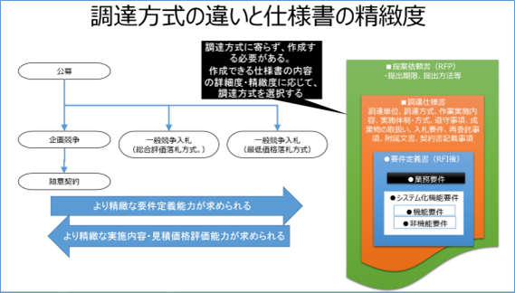
- 提案依頼書（RFP）は、調達方式に寄らず作成する必要がある
- 一般競争入札（最低価格落札方式）が最も、より精緻な要件定義能力が求められる
- 随意契約は、より精緻な実施内容・見積価格評価能力が求められる
- 政府標準ガイドラインに沿った開発タスクとドキュメント
- この図は、政府標準ガイドラインに沿って、組織としての事業計画に基づいた、業務・サービスの企画段階から、運用・保守、その後のシステム監査まで様々な業務（タスク）があるが、その各工程でのドキュメントを抜き出したもの。
- 工程ごとに様々な種類の仕様書類があるが、テンプレート的にデフォルトとなる記述内容が示されており、計画書・企画書をベースに、必要な手続き、仕様内容を加筆訂正していく形でドキュメント化していくことが可能である。
- アーカイブ機関のデジタルアーカイブ構築においては、特に、要求要件を明確にして、個々の機能要件部分を精緻化していくことに注力する必要がある。
- 外部委託に必要なドキュメントと手続き（一般競争入札）
- 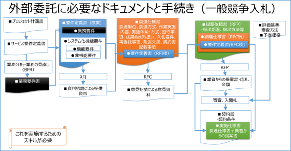
- 業務要件書は、要件定義書に含まれる
- 要件定義書は、調達仕様書に含まれる
- 調達仕様書は、提案依頼書に含まれる
- 工程ごとに様々な仕様書類を作成することになるが、そのもとは、事業計画であり、個別のプロジェクト計画から作成され、それぞれが引用されていく
- つまり、作業が進んだ段階で計画が変更になれば、プロジェクト計画書にフィードバックする必要がある
- 標準ガイドラインに示す各種計画書等の関係
- 各種ドキュメントに記載されるべき項目
- 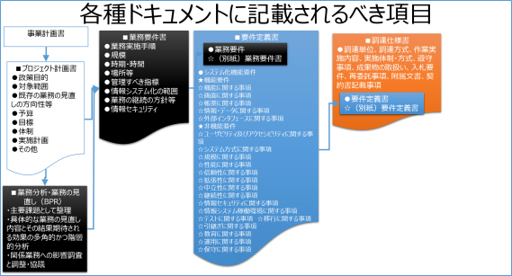
- 要件定義書記載項目（全体）
- 要件定義書記載項目（業務要件）
- 参考資料
- 政府情報システムの整備及び管理に関する標準ガイドライン
- データサイエンス領域での要件
- システムで何ができるようにするのか（個別機能要件）
- 機能に関する事項では、
- ①アーカイブ化機能として、AIを活用した業務に必要な情報の蓄積機能、メタデータ、テキストデータ、画像データの登録・変更・公開機能
- ②サービス提供機能として、利用者に効率的で快適な体験を提供するカスタマーエクスペリエンス（CX）デザイン思考でのサービスを実現するユーザインタフェース、内部処理機能、外部サービスとの連携など
- の要求要件を明確にする必要がある。
- 特に、AIを活用できる外部サービスを利用することとして、
- 音声の自然言語による入出力、知識として学習の効率を高めるための教師データの選択、教師データを最適に学習できる機械学習APIを持つAI処理モジュールの選択が重要である。
- それにより、従来からの問合わせ回答として、参考になる資料の選択と、その資料の所在情報の提示だけでなく、答えそのものの検索（事実検索）が可能になる。
- 現在もスマートフォン等で利用可能になっているGoogle Assistant、 Apple Siri、Microsoft Cortana、Amazon Alexa、IBM Watson等の知識にデジタルアーカイブ機関が組織化して保有した情報が知識として蓄積されていれば、より的確の事実検索が可能になり、この外部サービスのAPIを利用することにより、アーカイブ機関でのAIを活用したサービスの構築が効率化する。
- どのようなデジタルコンテンツを用意するか（コンテンツ構築要件）
- サプライチェーンの各機関が、デジタルコンテンツとして構築するコンテンツの要件も明確にして、
- ①二次情報としての蓄積情報・データに関する事項である、永続的識別子、メタデータ、目次・索引データ、関連データ、
- ②一次情報としてのコンテンツそのものである、動画、音声、画像データ、全文テキストデータ、
- 更にIoT等からの収集データ等が他のサプライチェーンの機関のコンテンツと合わせて、ビッグデータとして利活用しやすいようにするために、より一層の共通的な仕様を適用し、AIでの活用を加速させる。
- 【例】情報のデジタル化と活用
- 著作物の電子書籍化に関しては、
- 原資料からのデジタル化（イメージ化、テキスト化）と、文献の作成段階からデジタル化され電子書籍と印刷書籍が同時並行で進むものがあるが、作成過程及び最終成果物の仕様を標準化することにより、シングルソース・マルチユースが容易になり、利用者の読書環境に応じて様々な形態で提供されることにより、著作物の利活用が促進される。
- 現時点でのシングルソースとしてのマスター原稿段階では、
- 章節項、目次、索引、引用等の構造を明示するXSLが適用されたXMLテキストとし、電子書籍化する場合は、様々な閲覧環境に最適な書式とできるように、html5+CSS3をベースとしたEPUB3.1の仕様を適用する。
- AIシステムの教師データ付き学習データとしては、
- マスター原稿段階のXMLテキストを利用することにより、構造化された知識として活用が容易になる。
- 例えば、平成28年度情報通信白書（総務省編）は、マスター原稿から、ページレイアウト固定版（PDF版）、スマートフォン・PC・タブレット向けのリフロー版電子書籍（EPUB版）、Webブラウザ版（html版）が用意されている。
- 情報システム整備と運用要件定義時のセキュリティ考慮事項
- 「情報システムの整備と運用管理を調達する際の情報セキュリティ対策として考慮すべき要件メモ」
- 「政府情報システムの整備及び管理に関する標準ガイドライン実務手引書」より抜粋
- プロジェクトの管理
- プロジェクト管理要領の記載内容（プロジェクト計画書等の作成）
- 業務の見直し
- 業務要件の定義
- 要件定義
- 非機能要件（要件定義書の記載事項）
- 設計・開発
- 設計・開発実施要領の記載内容（設計・開発実施計画書等の作成）
- 業務の運営と改善
- 日常運営における業務改善の実施方法（日常運営における業務改善）
- 運用及び保守
- 運用実施要領の作成・記載内容（運用開始前の準備）
- 保守実施要領の作成・記載内容（運用開始前の準備）
- システム監査の計画
- システム監査計画の策定
- Bib40-06-3 次世代システムの構築に必要なスキル・知識
- サイバーセキュリティ対策として考慮すべき事項と必要なスキル・知識
- 総論
- サイバーセキュリティの被害に遭った場合、組織の存立が危ぶまれる事態になりえることを自覚する
・世の中で起こっているセキュリティ被害を対岸の火事だと思っている経営者、ITは導入しているにも関わらずセキュリティ対策のための費用はないとして対策に後ろ向きの経営者、最も重要な情報にアクセスする権限を持ちながら、セキュリティに関しての意識の低い経営者。これらの経営者が最大のセキュリティリスク - 国は、大企業のみならず、中小企業も、「サイバーセキュリティ経営ガイドライン」を参照することを求めている
-
- 東京都が中小企業の経営者向けに、サーバーセキュリティ対策として認識すべきことをイラストを交えてまとめたもの
- 経営者が認識すべきことであるが、それを認識させるためにも、担当者が理解していることが重要
-
- 基本方針－サイバーセキュリティは、より積極的な経営への「投資」へ－
- グローバルな競争環境の変化
- ITの発展によるビジネスの変革が、消費者向けのビジネスから企業間取引へと拡大
- サイバー空間と実空間の融合がさらに進み、チャンスもリスクも一層増大
- ⇒サイバーセキュリティをやむを得ない「費用」でなく、積極的な経営への「投資」と位置づけ、企業としての「挑戦」と、それに付随する「責任」として取り組むことが期待される
- 基本的な考え方
- 二つの基本的認識
- ＜①挑戦＞サイバーセキュリティは、利益を生み出し、ビジネスモデルを革新するものであり、新しい製品やサービスを創造するための戦略の一環として考えていく
- ＜②責任＞全てがつながる社会において、サイバーセキュリティに取り組むことは社会的な要求・要請であり、自社のみならず社会全体の発展にも寄与する
- 三つの留意事項
- ＜①情報発信による社会的評価の向上＞
- 「セキュリティ品質」を高め、品質向上に有効な経営基盤の一つとしてセキュリティ対策を位置付けることで企業価値を高めることが必要。
- そのような取組に係る姿勢や方針を情報発信することが重要。
- ＜②リスクの一項目としてのサイバーセキュリティ＞
- 提供する機能やサービスを全うする（機能保証）という観点から、リスクの一項目としてのサイバーセキュリティの視点も踏まえ、リスクを分析し、総合的に判断。
- 経営層のリーダーシップが必要。
- ＜③サプライチェーン全体でのサイバーセキュリティの確保＞
- サプライチェーンの一部の対策が不十分な場合でも、自社の重要情報が流出するおそれあり。
- 一企業のみでの対策には限界があるため、関係者間での情報共有活動への参加等が必要。
- サイバーセキュリティ対策として考慮すべき事項
- サイバーセキュリティ対策は、事業継続を脅かすリスクの１つ。
- わかっていますか？

- 情報セキュリティ対策は、経営に大きな影響を与えます！
- 経営者が法的・道義的責任を問われます！
- 組織として対策するために、担当者への指示が必要です！
- セキュリティ侵害を受ける70～80%が人為的なミス、故意
- サイバーセキュリティ対策の中で最もコストがかかるのが技術的対策。しかし全てのリスクに対して技術的対策をすることは困難。悪意があれば技術的な対策はすり抜けられる
- セキュリティー被害を受けた場合、その被害に対し会社が被る損害の可能性が高い順に投資をすることが重要。
- また、システムを入れる際に、セキュリティーも同時に入れるなど、ITとセキュリティー対策を一緒にすることも大切である。
- 更に、経営者を含め、社員全員に対し、セキュリティーポリシーやガイドブックを作成したり、併せてITパスポートの試験を受けさせることも大切である。
- 情報セキュリティ対策を怠ることで企業が被る不利益
- (1) 金銭の喪失,(2) 顧客の喪失, (3) 業務 の喪失, (4) 従業員 への影響
- 経営者が負う責任

- (1) 経営者などに問われる法的責任
- ・個人情報・他社から預かった秘密情報・自社の秘密情報・株価に影響を与える可能性のある未公開内部情報
- (2) 関係者や社会に対する責任
- ・営業停止、売上高の減少、企業イメージの低下などで、自社に損害をもたらずだけでなく、取引先に対する信頼関係の喪失、業界やサービス全体のイメージダウン・法令順守・顧客・取引先・従業員
- 【経営者が認識すべき】サイバーセキュリティ経営の3原則
- 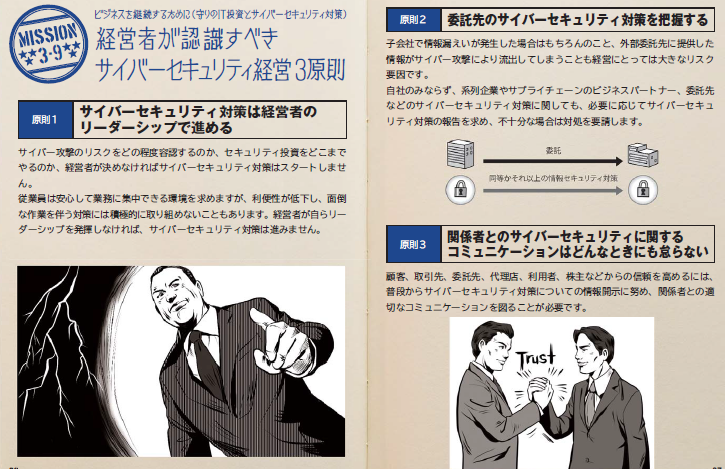
- 経営者は、以下の３原則を認識し、対策を進めることが重要である。
- （１）経営者のリーダーシップが重要。経営者は、IT活用を推進する中で、サイバーセキュリティリスクを認識し、リーダーシップによって対策を進めることが必要
- ビジネス展開や企業内の生産性の向上のためにITサービス等の提供やITを利活用する機会は増加傾向にあり、サイバー攻撃が避けられないリスクとなっている現状において、経営戦略としてのセキュリティ投資は必要不可欠かつ経営者としての責務である。
- また、サイバー攻撃などにより情報漏えいや事業継続性が損なわれるような事態が起こった後、企業として迅速かつ適切な対応ができるか否かが会社の命運を分ける。
- このため、サイバーセキュリティリスクを多様な経営リスクの中での一つとし適切に位置づけ、その対応方針を組織の内外に明確に示しつつ、経営者自らがリーダーシップを発揮して経営資源を用いて対策を講じることが必要である。その際、変化するサイバーセキュリティリスクへの対応や、被害を受けた場合の経験を活かした再発防止も必要である。
- （２）自社以外（ビジネスパートナー等）にも配慮。自社は勿論のこと、系列企業やサプライチェーンのビジネスパートナー、ITシステム管理の委託先を含めたセキュリティ対策が必要
- サプライチェーンのビジネスパートナーやITシステム管理の委託先がサイバー攻撃に対して無防備であった場合、自社から提供した重要な情報が流出してしまうなどの問題が生じうる。
- 自社のみならず、サプライチェーンのビジネスパートナーやITシステム管理の委託先を含めたセキュリティ対策を徹底することが必要である。
- （３）平時からのコミュニケーション・情報共有。平時及び緊急時のいずれにおいても、サイバーセキュリティリスクや対策、対応に係る情報の開示など、関係者との適切なコミュニケーションが必要
- 事業のサイバーセキュリティリスクへの対応等に係る情報開示により、関係者や取引先の信頼性を高める。
- 万一サイバー攻撃による被害が発生した場合、関係者と、平時から適切なセキュリティリスクのコミュニケーションができていれば，関係者や取引先の不信感の高まりを抑え、説明を容易にすることができる。また、サイバー攻撃情報（インシデント情報）を共有することにより、同様の攻撃による他社への被害の拡大防止に役立つことを期待できる。
- 事業のサイバーセキュリティリスク対応として平時から実施すべきサイバーセキュリティ対策を行っていることを明らかにするなどのコミュニケーションを積極的に行うことが必要である。
- 【経営者がやらなければならない】サイバーセキュリティ経営の重要10項目
- 経営者は、CISO等に対して、以下の１０項目を指示し、着実に実施させることが必要である。
- （１）サイバーセキュリティリスクの認識、組織全体での対応の策定
- 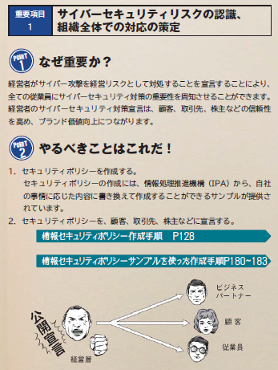
- サイバーセキュリティリスクを経営リスクの一つとして認識し、組織全体での対応方針（セキュリティポリシー）を策定していますか？
- 情報セキュリティ対策を組織的に実施する意思を、関係者に明確に示すために、情報セキュリティに関する方針を定め、要求に応じて提示できるようにしておきます。
- 事業を行う上で見込まれる情報セキュリティのリスクを把握した上で、必要十分な対策を検討させます。
- （２）サイバーセキュリティリスク管理体制の構築

- サイバーセキュリティ対策を行うため、経営者とセキュリティ担当者をつなぐ仲介者としてのCISO等からなる適切なサイバーセキュリティリスクの管理体制の構築は出来ていますか？
- 各関係者の責任は明確になっていますか？
- また、防犯対策など組織内のその他のリスク管理体制と整合をとらせていますか？
- （３）サイバーセキュリティリスクの把握と実現するセキュリティレベルを踏まえた目標と計画の策定

- サイバー攻撃の脅威に対し、経営戦略の観点から、守るべき資産を特定させた上で、社内ネットワークの問題点などのサイバーセキュリティリスクを把握させていますか？
- その上で、暗号化やネットワークの分離など複数のサイバーセキュリティ対策を組み合わせた多層防御など、リスクに応じた対策の目標と計画を策定させていますか？
- また、サイバー保険の活用や守るべき資産について専門企業への委託を含めたリスク移転策も検討した上で、残留リスクを識別させていますか？
- （４）サイバーセキュリティ対策フレームワーク構築（PDCA）と対策の開示
- 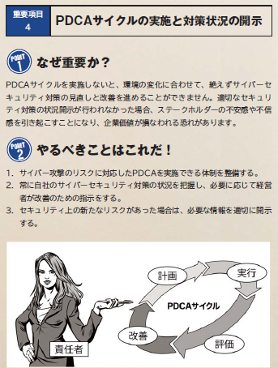
- 計画を確実に実施し、改善していくため、サイバーセキュリティ対策をPDCAとして実施するフレームワークを構築させていますか？
- その中で、監査（または自己点検）の実施により、定期的に経営者に対策状況を報告させた上で、必要な場合には、改善のための指示をしていますか？
- また、ステークホルダーからの信頼性を高めるため、対策状況について、適切な開示をさせていますか？
- 情報セキュリティ対策について、定期または随時に見直して、必要な改善や追加の対策を決めるように担当者に指示します。
- （５）系列企業や、サプライチェーンのビジネスパートナーを含めたサイバーセキュリティ対策の実施及び状況把握
- 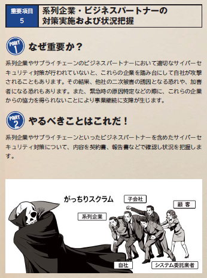
- 自社のサイバーセキュリティが確保されるためには、系列企業やサプライチェーンのビジネスパートナーを含めてサイバーセキュリティ対策が適切に行われていることが重要。このため、監査の実施や対策状況の把握を含むサイバーセキュリティ対策のPDCAについて、系列企業やサプライチェーンのビジネスパートナーを含めた運用をさせていますか？
- （６）サイバーセキュリティ対策のための資源（予算、人材等）確保

- サイバーセキュリティリスクへの対策を実施するための予算確保は出来ていますか？また、サイバーセキュリティ人材の育成や適切な処遇をさせていますか？
- 情報セキュリティ対策を実施するために、必要な予算と人材を確保します。
- （７）ITシステム管理の外部委託範囲の特定と当該委託先のサイバーセキュリティ確保
- 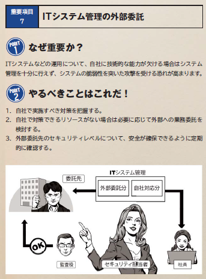
- サイバーセキュリティ対策を効率的かつ着実に実施するため、リスクの程度や自組織の技術力などの実態を踏まえ、ITシステムの管理等について、自組織で対応する部分と外部に委託する部分で適切な切り分けをさせていますか？また、ITシステム管理を外部委託する場合、当該委託先へのサイバー攻撃等も想定し、当該委託先のサイバーセキュリティの確保をさせていますか？
- 契約書に情報セキュリティに関する相手先の責任や実施すべき対策を明記し、合意する必要があります。
- （８）情報共有活動への参加を通じた攻撃情報の入手とその有効活用のための環境整備

- 社会全体において最新のサイバー攻撃に対応した対策が可能となるよう、サイバー攻撃に関する情報共有活動への参加と、入手した情報を有効活用するための環境整備をさせていますか？
- 新たな脅威に備えるようにします。また、知り合いやコミュニティへの参加で情報交換を積極的に行い、得られた情報について、業界団体、委託先などと共有します。
- （９）緊急時の対応体制（緊急連絡先や初動対応マニュアル、CSIRT）の整備、定期的かつ実践的な演習の実施
- 適切な初動対応により、被害拡大防止を図るため、迅速に影響範囲や損害を特定し、ITシステムを正常化する手順を含む初動対応マニュアル策定や組織内のCSIRT構築など対応体制の整備をさせていますか？また、定期的かつ実践的な演習を実施させていますか？
- 情報セキュリティ対策を実施するとともに、万が一のインシデントに備えて、緊急時の連絡体制を整備します。さらに、その連絡体制がうまく機能するかをチェックするためインシデントを想定した模擬訓練を定期的に行うと理想的です
- （１０）被害発覚後の通知先や開示が必要な情報の把握、経営者による説明のための準備
- 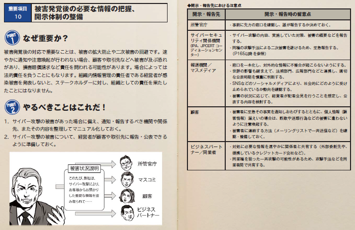
- 外部に対して迅速な対応を行うため、被害の発覚後の通知先や開示が必要な情報について把握させていますか？また、情報開示の際、経営者が組織の内外への説明が出来る体制の整備をさせていますか？
- ITおよびサイバーセキュリティに関する組織の視点6分類

- 「企業経営のためのサイバーセキュリティの考え方」を参考に、分類を追加してみたもの
- 【参照】「企業経営のためのサイバーセキュリティの考え方」【2016年8月3日NISC】
- 【理想的に】ITの利活用を事業戦略上に位置づけ、サイバーセキュリティを強く意識し、積極的に競争力強化に活用しようとしている企業
- （積極的にITによる革新と高いレベルのセキュリティに挑戦するあらゆる企業）
- ITの利活用と情報セキュリティ対策のバランスが取れている企業
- 情報のオープン化、外部情報の活用、機密情報の保護をきちんと行い、ITの利活用により新しいサービスを展開
- 【もっと積極的に】IT・セキュリティをビジネスの基盤として捉えている企業
- （IT・サイバーセキュリティの重要性は理解しているものの、積極的な事業戦略に組み込むところまでは位置づけていない企業）
- ITを積極的に活用してビジネスの発展を目指すことが必要
- 【無駄な投資】過剰なセキュリティ意識により、ITの利活用を著しく制限し、ITの利活用を競争力強化に活用させていない企業
- ITの利活用と情報セキュリティ対策のバランスが取れていなく、費用対効果の悪い企業
- 基本姿勢として、情報は全て機密、IT環境は必要最低限に利用を制限
- 必要以上のセキュリティ対策により、無駄に費用をかけ、業務効率、サービスの向上を阻害している企業
- 過剰なセキュリティ意識により、ITの利活用を著しく制限し、競争力強化に活用させない企業
- 過剰なリスク意識により、インターネットでの情報発信、情報収集や、IT活用による業務効率を向上させる意識のない企業
- セキュリティ偏重の判断は、業務の現場の不便をもたらし、柔軟な発想や市場変化に対する機敏性を損なわせる。最悪の場合、ビジネスイノベーションの規格をも潰してしまう。
- 組織内のITリテラシーの向上が十分でないために、低いレベルの人に合わせたセキュリティ対策のために、意識の高い人の業務の効率化を阻害している
- リスクを再評価して過度にならない適切なセキュリティ対策の再構築が必要
- 【危険】情報セキュリティ対策の必要性は理解しているが、必要十分なセキュリティ対策が出来ていないにも関わらず、ITの利活用を進めている企業
- ITの利活用と情報セキュリティ対策のバランスが取れていない企業
- （IT・サイバーセキュリティの重要性は理解しているものの、積極的な事業戦略に組み込むところまでは位置づけていない企業）
- 業務効率とのバランスが取れているセキュリティ対策を実施しようとしている企業
- 情報セキュリティポリシーの策定と実践、定期的な監査
- 創造力、発想力のある人材の育成
- ITスキルと知識を持った人材の育成が必要
- 【危険】情報セキュリティの必要性を理解していない企業
自らセキュリティ対策を行う上で、事業上のリソースの制約が大きい企業- （主に小企業・零細企業でセキュリティの専門組織を保持することが困難な企業）
- まずは、最低限の情報セキュリティ対策を理解し、コストを掛けずに効果の大きいことから実施することが必要
- 【対象外】ITを利用していない企業
- サイバーセキュリティ侵害が起こりえず、対象外だが、業務効率化のためにITの活用を促すか？？
- 情報セキュリティ対策は必要
- ビジネスを発展させるために(攻めのIT投資とサイバーセキュリティ対策)
- 組織を発展させるために経営者、管理者が認識し、実践すべきことは？
- 柔軟にかつ大企業に先駆けて、IT関連の次世代技術、デジタル情報を活用していくことが、中小企業の発展につながる。デジタル情報、IT技術の進展を受入れ、それを活用して顧客サービスの強化を図る企業に、大きなビジネスチャンスがある。
- ビジネスの拡大・発展のための「攻めのIT投資」は、確立していない世界であり、セキュリティリスクも高くなる。
- 次世代技術を活用したビジネス展開
- すでにデジタルトランスフォーメーション(デジタル変革)は始まっている
- 現状認識
- 今は、IoT、ビッグデータ、ロボット、AI等の技術革新による、第4次産業革命の入り口にいる
- あらゆるものがインターネットに接続するIoTの広がり、あらゆる情報がビッグデータとして活用され、AI技術により、様々な分野で定型的な業務はもとより、人海戦術では不可能だった業務まで、AI技術を適用したサービス、ロボットの適用が始まっている
- 既存のビジネスや業務に新技術を取り入れるだけでなく、ビジネスモデルを変え、経済活用のみならず、個人の生活や社会構造まで影響が及ぶ
- デジタルフォーメーション（デジタル変革）とは、あらゆる情報がデジタル化され、IT技術によって、社会や産業、企業、人のあり方や働き方が変わっていくこと
- 第4次産業革命が進むにつれて、発展するビジネスと縮小するビジネスが明確になっていく
- 時代環境が大きく変わる時、それにそぐわないビジネスは淘汰されていく
- 匠の技的な高度な伝統的技能を要する作業や、旧来の延長線で仕組みの高度化、洗練により、生き残れるビジネスもあるが、現状維持のビジネスの多くは、相対的に意義を失う可能性が高い
- IoT、ビッグデータ、ロボット、AI等の技術を、クラウドコンピューティングやモバイル環境で活用できるようになったことは、少ない投資で事業を立ち上げることが可能であり、中小企業、ベンチャー企業や個人の活躍のまたとないチャンスである
- IoT、ビッグデータ, AI、ロボットの活用

- 中小企業での活用事例「IoTユースケースマップ」
- 深刻な人手不足に対応した、省力化、自動化のための投資
- 人が行ってきたことをセンサー化し、センサーからの膨大な情報を機械的に分析することにより、今までできなかった高度な分析と、その結果を踏まえて業務やサービスを効率的、効果的に行える
- IoTが果たす役割と効果

- 中小企業にとって、経費削減と人材確保は大きな課題
- 各種センサーによる自動測定や電子タグ等（RFID）を人やモノに貼り動きの情報を計測し収集することにより、リアルタイムで状況が把握できる
- その際に、センサーが誤動作したり、誤った情報を発信すると、正確な状況を把握できなくなり、業務やサービスが混乱する
- IoT、ビッグデータ、AI、ロボットは繋がっている
- ①センサー、機器、ロボットによりデータが取得され、②データのやり取りや通信により③集約されることによりビッグデータ化し、④人工知能等を用いて分析され⑤ロボット等を通じて実環境でのアクションとして実行される
- IoT、ビッグデータ、AI、ロボットを利用することにより、人が行ってきたことが効率化されるとともに、これらを使いこなすことにより、人の仕事の質を高める能力が付加価値となる
- 人工知能（AI）が果たす役割と効果

- 人工知能は、中小企業の既存の業務の人材不足の解消に留まらず、既存の人材で新たな業務を行えるようになることが期待できる。
- 不足している労働力を補完する。既存の労働力を省力化する。既存の業務効率・生産性を高める。既存の業務の提供する価値（品質や顧客満足度など）を高める。これまでに存在しなかった新しい価値をもった業務を創出する。既存の業務に取組む意欲や満足度を高める。新しい業務に取組む意欲や満足度を高めること。
- 活用する際のサイバーセキュリティ上の留意点

- IoT装置は、十分なセキュリティ対策がされていないものが多い。特に以前のIoT製品に関しては管理者権限パスワードの変更手順や、ファームウェアのアップデート機能はほとんど実装されていない。
- 利用者側として、IoT製品は十分なセキュリティ対策がされていないことを前提とした対策が必要
- 製造者は、IoT製品のファームウェアの自動アップデート機能を実装し、脆弱性に対して速やかに対応する等の「IoT製品ガイドライン」に沿った対応が必要
- 膨大な情報をビッグデータとして活用に当たっては、「改訂個人情報保護法」の個人情報に該当する可能性の「グレーゾーン」の情報も増える。また、利用の仕方によっては著作権侵害になるケースもある。さらに、情報をビッグデータとして公開する際に、故意・過失に関わらず、機密性の高い情報を公開してしまう可能性もある
- IoTを活用する一般利用者のためのルール

- • 問合せ窓口やサポートがない機器やサービスの購入・利用を控える：インターネットに接続する機器やサービスの問合せ窓口やサポートがない場合、何か不都合が生じたとしても、適切に対処すること等が困難になる。問合せ窓口やサポートがない機器やサービスの購入・利用は行わないようにする。
- • 初期設定に気をつける・機器を初めて使う際には、IDやパスワードの設定を適切に行う。パスワードの設定では、「機器購入時のパスワードのままとしない」、「他の人とパスワードを共有しない」、「他のパスワードを使い回さない」等に気をつける。・取扱説明書等の手順に従って、自分でアップデートを実施してみる。
- • 使用しなくなった機器については電源を切る：使用しなくなった機器や不具合が生じた機器をインターネットに接続した状態のまま放置すると、不正利用される恐れがあることから、使用しなくなった機器は、そのまま放置せずに電源を切る。
- • 機器を手放す時はデータを消す：情報が他の人に漏れることのないよう、機器を捨てる、売るなど機器を手放す時は、事前に情報を削除する。
- サイバーセキュリティ対策に必要なスキルと知識
- 情報システムのライフサイクルに応じた各セキュリティ専門分野の対象フェーズの分類
- セキュリティ領域のスキル標準「ITSS+」【2017年6月5日】
- 専門的なセキュリティ業務の役割の観点により、経営課題への対応から設計・開発、運用・保守、セキュリティ監査における13の専門分野を具体化
- 新たに創設された国家資格「情報処理安全確保支援士(登録セキスペ)」が想定する業務を包含
- 【閉じる】専門分野【詳細】
- 情報リスクストラテジ
- 自組織または受託先における業務遂行の妨げとなる情報リスクを認識し、その影響を抑制するための、組織体制の整備や各種ルール整備等を含む情報セキュリティ戦略やポリシーの策定等を推進する。自組織または受託先内の情報セキュリティ対策関連業務全体を俯瞰し、アウトソース等を含むリソース配分の判断・決定を行う。
- 情報セキュリティデザイン
- 「セキュリティバイデザイン」の観点から情報システムのセキュリティを担保するためのアーキテクチャやポリシーの設計を行うとともに、これを実現するために必要な組織、ルール、プロセス等の整備・構築を支援する。
- セキュア開発管理
- 情報システムや製品に関するリスク対応の観点に基づき、機能安全を含む情報セキュリティの側面から、企画・開発・製造・保守などにわたる情報セキュリティライフサイクルを統括し、対策の実施に関する責任をもつ。
- 脆弱性診断
- ネットワーク、OS、ミドルウェア、アプリケーションがセキュアプログラミングされているかどうかの検査を行い、診断結果の評価を行う。
- 情報セキュリティ
- 組織としての情報セキュリティ戦略やポリシーを具体的な計画や手順に落とし込むとともに、対策の立案や実施（指示・統括）、その見直し等を通じて、自組織または受託先における情報セキュリティ対策の具体化や実施を統括する。また、利用者に対する情報セキュリティ啓発や教育の計画を立案・推進する。
- 情報セキュリティアドミニストレーション
- 組織としての情報セキュリティ戦略やポリシーを具体的な計画や手順に落とし込むとともに、対策の立案や実施（指示・統括）、その見直し等を通じて、自組織または受託先における情報セキュリティ対策の具体化や実施を統括する。また、利用者に対する情報セキュリティ啓発や教育の計画を立案・推進する。
- 情報セキュリティアナリシス
- 情報セキュリティ対策の現状に関するアセスメントを実施し、あるべき姿とのギャップ分析をもとにリスクを評価した上で、自組織または受託先の事業計画に合わせて導入すべきソリューションを検討する。導入されたソリューションの有効性を確認し、改善計画に反映する。
- CSIRTキュレーション
- 情報セキュリティインシデントへの対策検討を目的として、セキュリティイベント、脅威や脆弱性情報、攻撃者のプロファイル、国際情勢、メディア動向等に関する情報を収集し、自組織または受託先に適用すべきかの選定を行う。
- CSIRTリエゾン
- 自組織外の関係機関、自組織内の法務、渉外、IT部門、広報、各事業部等との連絡窓口となり、情報セキュリティインシデントに係る情報連携及び情報発信を行う。必要に応じてIT部門とCSIRTの間での調整の役割を担う。
- CSIRTコマンド
- 自組織で起きている情報セキュリティインシデントの全体統制を行うとともに、事象に対する対応における優先順位を決定する。重大なインシデントに関してはCISOや経営層との情報連携を行う。また、CISOや経営者が意思決定する際の支援を行う。
- インシデントハンドリング
- 自組織または受託先におけるセキュリティインシデント発生直後の初動対応（被害拡大防止策の実施）や被害からの復旧に関する処理を行う。セキュリティベンダーに処理を委託している場合には指示を出して連携する。情報セキュリティインシデントへの対応状況を管理し、CSIRTコマンドのタスクを担当する者へ報告する。
- デジタルフォレンジクス
- 悪意をもつ者による情報システムやネットワークにを対象とした活動の証拠保全を行うとともに、消されたデータを復元したり、痕跡を追跡したりするためのシステム的な鑑識、精密検査、解析、報告を行う。
- 情報セキュリティインベスティゲーション
- 情報セキュリティインシデントを対象として、外部からの犯罪、内部犯罪を捜査する。犯罪行為に関する動機の確認や証拠の確保、次に起こる事象の推測などを詰めながら論理的に捜査対象の絞り込みを行う。
- 情報セキュリティ監査
- 情報セキュリティに係るリスクのマネジメントが効果的に実施されるよう、リスクアセスメントに基づく適切な管理策の整備、運用状況について、基準に従って検証又は評価し、もって保証を与えあるいは助言を行う。
- システムを活用したサービスの企画・構築・運用に必要な人材育成
- はじめに
- ITを活用したサービスの実現に関わる企画部門、業務部門、システム部門が保有すべきスキルと知識。
- 組織委内で人材を育成、確保できない場合は、外部に求め、全体で以下のようなスキルと知識を保有することが望まれる。
- 業務に必要なスキル・知識の習得
- iコンピテンシ・ディクショナリ（iCD）
- システム開発におけるタスクとスキル・知識を体系的に洗い出したものである。
- 各アーカイブ機関での人材育成
- 各アーカイブ機関が人材育成について検討する際、事業の内容に合わせて、「タスクディクショナリ」からタスクを選択することにより、そのタスクを遂行するために必要なスキル、知識が提示される。タスクを担当する人材は、そのスキル・知識を絞り込んで習得するようにすることにより、短期間に効率的に人材育成ができる。
- 業務遂行のタスクとスキル・知識の蓄積のスキーム
- 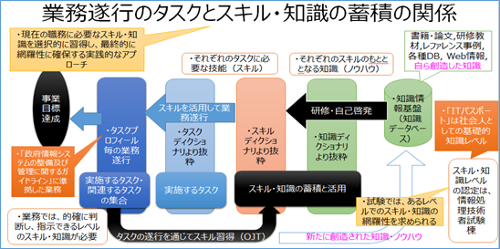
- １つのタスクを実施するためには、様々なスキルが必要であり、１つのスキルは、経験と様々な知識により身に付く。現在の職務に必要なスキル・知識を選択的に習得し、最終的に網羅性に確保する実践的なアプローチが、iコンピテンシ・ディクショナリの考え方である。
- 業務を遂行するためには、的確に判断し、指示できるレベルのスキル・知識が必要であり、業務に必要なスキル・知識を、事前に選択的に習得して、業務を遂行することが望ましいが、業務を遂行する前に持っていないスキル・知識は、タスクの遂行を通じて習得（OJT）することで、業務を円滑に進められるようになる。
- iコンピテンシ・ディクショナリ（iCD）を活用した業務の遂行とスキル・知識の選択的習得
- 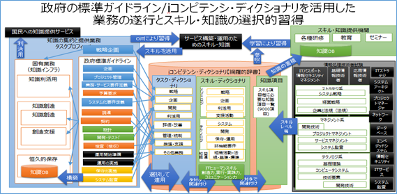
- 政府の標準ガイドラインで示された開発プロセスでの業務をタスクとして、それぞれのタスクの遂行に必要なスキル・知識の選択の概念を示したものである。
- 図書館におけるデジタルアーカイブ事業を念頭にタスクプロフィールを仮定
- デジタルアーカイブ構築プロジェクトを、政府標準ガイドラインに沿った業務jの工程（タスクプロフィール）で想定し、その中の個々のタスクに必要なスキルを選択
- そのスキルを身につけるためのベースとなる知識を選択
- タスクディクショナリ
- タスクの種類を網羅的に辞書化したものが「タスクディクショナリ」
- スキルディクショナリ
- スキルの種類を網羅的に辞書化したもの「スキルディクショナリ」
- ①ビジネス活動の様々な手法、方法のスキルとして「メソドロジ」、
- ②IT関連技法などのスキルとして「テクノロジ」
- ③対象となる業務を進めるための関連知識や業務固有のスキルとして「関連業務知識」、
- ④ IT に関するタスクを実行する際に必要となる実行力・実践力、創造力、コミュニケーション力等のスキルとして「ITヒューマンスキル」。
- 実行力・実践力
- 俯瞰力・深耕力・革新力・継続力
- 効果を上げるために、実行・実践環境や状況を適切に捉える力
- 効果的継続の実行と新しい取り組みや新領域へ挑戦する力
- 創造力
- 問題発見力・問題分析力・仮説設定力・論理思考力・概念化力
- 状況を認知して問題を発見し、見極め、解決案を策定する「価値の創造・問題解決」を着実に遂行する力
- 複雑な状況や問題に対して、論理的思考により概念の形成、判断の構築、命題設定を行う力
- コミュニケーション力
- 自分の考えを伝える力・相手の考え方を理解する力・共感を呼ぶ力
- 情報の獲得や更なる情報の要求や内容の確認、他者への情報提供、他者に影響を与えたり、協働への引導する力
- 知識ディクショナリ
- 様々なスキルに必要となる知識を網羅的に辞書化したものが、「知識ディクショナリ」
- データサイエンス領域でのタスクとスキル
- 第4次産業革命に対応した新スキル標準（ITSS+）として、「セキュリティ領域」とともに、「データサイエンス領域」に関して、大量データを分析し、その分析結果を活用するための一連のタスクとそのために習得しておくべきスキルカテゴリ、タスク構造が網羅的示されている。
- システム部門ではなく、業務部門のタスクとして、業務設計、データの作成と収集、構造化データ加工、解析用データ準備、データの準備、データ解析、データ可視化、非構造化データ処理、評価、業務への組み込みと評価の工程が定義されている。
- これからのデジタルアーカイブの構築は、ビッグデータやAIを活用が必須であり、各アーカイブ機関の業務部門が中心となって「データサイエンス領域」のタスク工程に沿って確実に進め、業務への適用を評価していくことが重要であり、業務部門での人材育成、人材確保が課題となる。
- 網羅的なスキル・知識レベルの確認
- 情報処理技術者試験によるスキル・知識の網羅性の評価認定
- 専門分野においては、分野毎に網羅的な知識の習得状況評価する
- 応用分野においては、IT関連全般の知識の理解度を評価する
- 基礎分野においては、IT関連全般の用語の意味の理解度を評価する
- 業務を通じての知識習得では網羅的な知識は得られないため、合格するためには業務以外での学習が必要
- 共通レベル定義
- レベル７
- 社内外にまたがり、テクノロジやメソドロジ、ビジネス変革をリードするレベル。
- 市場への影響力がある先進的なサービスやプロダクトの創出をリードした経験と実績を持つ世界で通用するプレーヤ。
- レベル６
- 社内外にまたがり、テクノロジやメソドロジ、ビジネス変革をリードするレベル。
- 社内だけでなく市場から見ても、プロフェッショナルとして認められる経験と実績を持つ国内のハイエンドプレーヤ。
- レベル５
- 社内において、テクノロジやメソドロジ、ビジネス変革をリードするレベル。
- 社内で認められるハイエンドプレーヤ。
- レベル４
- 一つまたは複数の専門を獲得したプロフェッショナルとして、専門スキルを駆使し、業務上の課題の発見と解決をリードするレベル。
- プロフェッショナルとして求められる、経験の知識化とその応用（後進育成）に貢献する。
- レベル３
- 要求された作業を全て独力で遂行するレベル。
- 専門を持つプロフェッショナルを目指し、必要となる応用的知識・技能を有する。
- レベル２
- 要求された作業について、上位者の指導の下、その一部を独力で遂行するレベル。
- ITを活用した業務の構築・運用に携わるために必要となる基本的知識・技能を有する。
- レベル１
- 要求された作業について、上位者の指導を受けて遂行するレベル。
- ITを利用する社会人の常識としての基本的知識・技能を有する。
- 分野
- 専門分野【レベル4以上】においては、分野毎に網羅的な知識の習得状況を評価する
- 応用分野【レベル3】においては、IT関連全般の知識の理解度を評価する
- 基礎分野【レベル2】においては、IT関連全般の用語の意味の理解度を評価する
- 情報処理技術者試験
-
- 情報処理技術者試験のレベル１で、社会人の常識とされる.。職業人が共通に備えておくべき情報技術に関する基礎的な知識をもち，情報技術に携わる業務に就くか，担当業務に対して情報技術を活用していこうとする者が持つべき、スキルと知識を備えているかを評価する。
- 出題範囲は網羅的であるが、内容は用語の意味を知っていればいい程度。
- 次世代サービスでの人材育成・確保
- はじめに
- AIが人間の能力を超える日は決して近くはない。今後10年は、まずは人間に不足している労働力を補完し、労働力を省力化することにより、既存の業務効率・生産性を高めることである。
- 更に、既存の業務の提供する価値（品質や顧客満足度など）を高め、これまでに存在しなかった新しい価値をもった業務を創出することは容易に想像できる。
- 今後の人材として、AI等の活用を想定し、新しい業務に取組む意欲や満足度を高めることが重要である。
- AIの活用が一般化する時代における重要な能力
- ルーティンワーク、マニュアル化された仕事は、アルバイト、非常勤、外部委託、そして人工知能に置き換わる。そのような時代に、人が持つ重要な能力は、情報収集能力、課題解決能力、論理的思考などの業務遂行能力である。
- 企画発想力や創造性、語学力や理解力、表現力などの基礎的素養と、チャレンジ精神や主体性、行動力、洞察力などの人間的資質を発揮できることが重要である。
- また、円滑な業務の遂行のためには、コミュニケーション能力やコーチングなどの対人関係能力が、今まで以上に必要になる。
- 業務担当の役割と資質
- 図書館等のデジタルアーカイブ機関での、資料の収集、組織化、保存、提供の業務、レファレンスサービス、予測調査等の業務のうち、マニュアルに沿って行ってきた業務はもとより、自ら習得してきた文献等の知識、調べ方のスキルに基づいて、事実を提供するサービスは、AIシステムを活用し、AIシステムにより自動的に提示する情報の評価、補正する業務に移行していくことが必然となる。
- 自ら事実を知識として保有しその知識を提示する能力ではなく、AIシステムを活用して外部にある知識を併せて、新たな知識として付加価値を付けた知識を提示する能力が求められる。
- 選書
- 関連付けに必要な典拠類の構築
- 情報に関する基本情報付け（メタデータ付与）
- 情報に関する付加価値情報付け
- 情報間の関連付け
- 分類・主題情報の付与
- レファレンス
- 数年後、機械学習が一般化され特別でなくなった次に特別な価値を持つのは、ディープラーニングに可能な限り早く取り組み、知見を積み、自組織に必要になるデータを理解し、少しでも早くそのデータの蓄積を始めることが大事である。
- 新しい役割分担
- 概要
- 従来は、事業戦略部門、業務部門、システム部門等に分かれて、サービスを構築し運用してきた。近年、システムライブラリアンというシステムに詳しいライブラリアンの必要性が謳われてきたが、 今後は、①ビジネスの旗振り役、②ディ－プラ一二ングの技術者、データサイ工ンテイスト、③モデルを組み込んだシステムを作る工ンジ二ア、④ビジネスと工ンジ二ア、データサイ工ンテイストの橋渡し役のような分類で、図書館等のデジタルアーカイブ機関が保有する情報をビッグデータとして、如何にして知識として蓄積し活用していくかを調整する「ビジネスとエンジニア、データサイエンティストの橋渡し役」が重要になる。
- ビジネスの旗振り役
- ビジネスの旗振り役は、組織のCEO、CIOクラスであり、社会動向、市場動向を踏まえて戦略的に事業計画を策定する役割を担う。しかしながら、急速な社会の変化に対応して的確な判断ができる経営層が少なく、またデジタル変革の時代に組織が保有する情報の重要性を認識するCDO的な役割を持つ人材が経営層にいないのも現状である。
- そのような状況において、この役割を補佐役として、常に社会動向と利用者ニーズを把握し、実質的にマネジメントするビジネスの旗振り役が重要な役割を果たす人材が重要である。
- ビジネスと工ンジ二ア、データサイ工ンテイストの橋渡し役
- 橋渡し役は、既存の組織にはない役割であり、ITとAIの技術を理解しながらビジネスとつないでいく人で、AIの機能モジュールは、AI関連機関よりライブラリが整備され、多種多様なAPlが提供されたりされているため、自らアルゴリズムを設計、開発する必要はない。
- どうビジネスに生かすかを描き、AIを活用したプロジェクトをマネジメントできる人材が求められる段階になってきた。
- 個別システム構築・運営におけるセキュリティ考慮点
-
- Webサイトの構築、運営におけるセキュリティ考慮点
- 個人情報、支払情報を扱うサービスの運営におけるセキュリティ考慮点
-
- BCPにおけるセキュリティ対策
- 2018年に心配される事業継続計画（BCP）のリスクトップ10【2018年6月21日TechTarget】
- 概要
- Business Continuity Institute（BCI）は、ここ数年、英国規
格協会（BSI：British Standards Institution）のサポートを
受け、毎年「BCI Horizon Scan Report」を発行している。この
報告書には、事業継続計画（BCP）の重要なトレンドと進展状
況が掲載されている。この報告書に記載されるBCPのリスクは
一部変わらないものもあるが、テクノロジーの発展やビジネス
のグローバル展開が進むにつれて深刻化しているものもある。
- サイバー攻撃
- BCIが発行したここ数年の年次報告書では、サイバー攻撃とサイバーセキュリティへの脅威
をリスクに挙げた調査回答者が最も多かった。調査に参加した多くの回答者は、尽力はしてい
るものの、サイバー攻撃のリスクはいまだ解消されていないと危惧している。主な懸念事項は、
サービス拒否攻撃、フィッシング、ウイルスだった。
- データ侵害
- サイバー攻撃とほぼ同数の調査回答者が、データやデータベースをはじめ、重要なシステム
への不正アクセスへの懸念を示している。データやシステムの損傷、破損、破壊、データへのア
クセス拒否、ランサムウェアが脅威として挙げられた。
- ITシステムと通信の予定外の停止
- 復旧技術が向上し、クラウドベースシステムが使用されているにもかかわらず、重要なデータ
や音声システムが損傷する可能性が、依然として調査回答者の大きな懸念になっている。
- 停電
- 2017年に発生した複数のハリケーンや近年の米国北東部での大雪により、BCPの主なリス
クと脅威を示したリストの多くで停電が上位に押し上げられている。停電への基本対策は、バッ
クアップ電源システム（ディーゼルや天然ガスによる発電、バッテリー、無停電電源など）だ。
水道、ガス、廃棄物処理、蒸気などの公共サービスも停止する可能性を考慮する必要がある。
- 悪天候
- 原因が地球温暖化にあるかどうかはともかく、深刻な悪天候が発生する頻度が高まっている
ようだ。暴風雨も激しさも増しているように思える。例えば、2017年に発生したハリケーンは、個
人資産や公共インフラを合わせて、数十億ドルの損害を引き起こした。
- テロ行為
- 銃乱射事件、凶器に自動車を用いたテロ、起爆装置を使った爆破テロが連日トップニュース
を飾っている。調査回答者は、以前の報告書に比べて、こうしたテロ行為の影響への懸念を強
めている。
- セキュリティインシデント
- サイバー攻撃とは異なり、BCPへのリスクには、建物への不正侵入、建物や施設の破壊、詐
欺行為、民衆による動乱など、セキュリティに関する物理的な脅威も含まれる。
- 火災
- どれだけ予防や対策を講じても、火災は起こり得る。調査回答者は最も重要な火災対策の1
つに、すぐに使える場所に消化剤を充填（じゅうてん）した消火器を設置し、その場所に適切な
目印を付けておくことを挙げる。火災検知、消化システムは、消火器と同様、地域の建築基準で
必須要件になっているのが一般的だ。
- サプライチェーンの混乱
- 上流工程と下流工程のどちらで混乱が生じても、サプライチェーンへの損傷は重大な懸念
事項になる。企業に多種多様な影響を及ぼすため、サプライチェーンの継続性は、恐らく、BCP
／DR計画チームが対応する最も重要な取り組みの1つだ。インターネットを使ってサービスを提
供したり、製造活動を行ったりしていない企業でも、サービスを動かすための機能性の高いイ
ンターネットはやはり必要だ。
- 輸送ネットワークの混乱
- 製品の製造を終えたら、多くの異なる販売経路を利用して、完成した製品を配送する。こうし
た販売経路が利用できなくなったら、注文に対応できなくなる。出荷／配送の広域ネットワーク
を持たないAmazon.comのような企業を想像してほしい。こうした企業の活動は完全に停止す
るだろう。
- 事業継続計画（BCP）とセキュリティインシデント対応
- BCPとは
- BCPとは、企業が緊急事態（自然災害、大火災、感染症、テロ、、、）に遭遇した場合において、事業資産（人・もの（情報及び設備）・金）の損害を最小限にとどめつつ、中核となる事業の継続あるいは早期復旧を可能とするため、平時に行うべき活動、当該緊急非常時における事業継続のための方法、手段などをあらかじめ取り決め、それを文書化したもの。
- BCPはなぜ必要か？
- 企業が被災し、復旧が遅れ、事業継続が出来なくなると、①サプライチェーンの分断、②働く場の喪失、③事業の廃止、倒産といった事態に陥る可能性がある
- また、被害が甚大であれば、産業集積そのものが喪失したり、地域の雇用や経済に大きな影響が出ることとなり、被災地以外に影響が波及することにもなる

- 何のためにBCPを策定するのか？
- セキュリティインシデント対応はBCPの１つ
- BCPとは、企業が緊急事態（自然災害、大火災、感染症、テロ、、、）に遭遇した場合において、事業資産（人・もの（情報及び設備）・金）の損害を最小限にとどめつつ、中核となる事業の継続あるいは早期普及を可能とするため、平時に行うべき活動、当該緊急非常時における事業継続のための方法、手段などをあらかじめ取り決め、それを文書化したもの。
- 情報セキュリティポリシー（基本方針、対策基準）は、人的・物的被害の防御、軽減が主眼の「防災計画」の１つ
- インシデント対応は、被災後の事業の継続・早期復旧を視野に入れたBCPの１つ